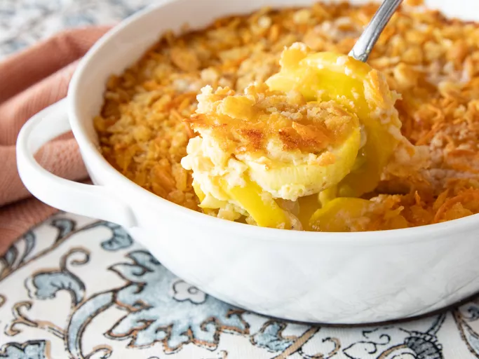

Squash Casserole

Description
When summer squash season rolls around and you need a way to use up your yellow squash bounty,
what better dish to make than a creamy, cheesy, and buttery squash casserole?
The Southern classic combines fresh squash and onion
with a creamy sauce and a crunchy cracker-Cheddar cheese topping.
Ingredients
- 4 cups sliced yellow squash
- 1 cup shredded Cheddar cheese
- 2 large eggs, beaten
- ¾ cup milk
Steps
- Place squash and onion in a large skillet over medium heat; pour in water.
Cover, and cook until squash is tender, about 5 minutes. Drain well,
and place in a large bowl.
- Mix eggs and milk together in a small bowl, then add to squash mixture.
- Stir in 1/4 cup melted butter, and season with salt and pepper.
Spread into the prepared baking dish.
- Bake in the preheated oven until lightly browned, about 25 minutes.